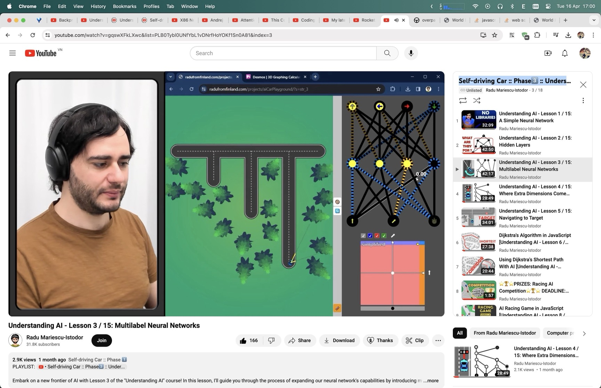
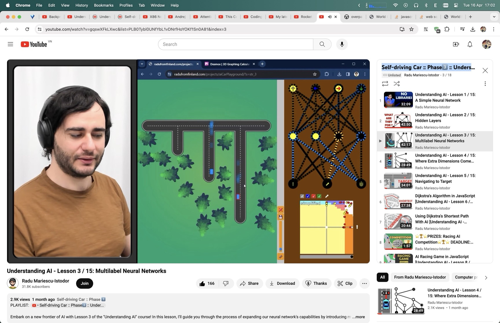

Build · neural-networksslides + app
Layers · width · depth
Stacked curve-fitting — the bridge from knobs to self-driving brains.
curve-fitting→layers→self-driving-car
01notes/neural-networks.md
ArchitectureI/O
Input · hidden · output
in
Features
Sensors, pixels, embeddings…
hid
Capacity
Depth × width trade-offs.
out
Decisions
Labels, controls, multilabel bits.
02compose transforms
Tunefeel weights
Manual edit builds intuition

03slides/assets/neural-networks-tune.jpg
Searchhyperparams
Auto-tune many instances

04slides/assets/neural-networks-auto-tune.jpg
05demos/neural-networks/app